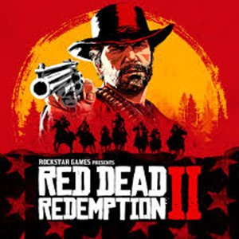
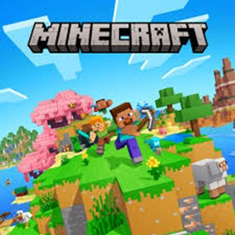
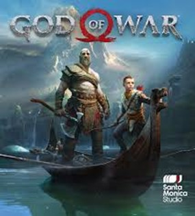

Mis Videojuegos Favoritos
The Legend of Zelda: Breath of the Wild

Resumen: Un juego de aventura y exploración en mundo abierto donde el jugador controla a Link en su misión por derrotar a Ganon y salvar el reino de Hyrule. Destaca por su libertad de exploración, puzles y mecánicas de combate.
Red Dead Redemption 2

Resumen: Un western de mundo abierto que sigue la historia de Arthur Morgan, un forajido en los últimos días del Salvaje Oeste. Con una narrativa profunda y un mundo detallado, el juego permite al jugador tomar decisiones que afectan el desarrollo de la historia.
The Witcher 3: Wild Hunt

Resumen: Un RPG de acción basado en las novelas de Andrzej Sapkowski, donde el jugador controla a Geralt de Rivia, un cazador de monstruos en busca de su hija adoptiva mientras enfrenta peligrosas criaturas y conflictos políticos.
Minecraft

Resumen: Un juego de construcción y exploración en un mundo generado aleatoriamente. Los jugadores pueden recolectar recursos, construir estructuras, explorar cuevas y enfrentarse a criaturas mientras crean su propia aventura.
God of War (2018)

Resumen: Un reinicio de la saga en el que Kratos, ahora en la mitología nórdica, emprende un viaje con su hijo Atreus para esparcir las cenizas de su esposa. Combina acción, narrativa emocional y mecánicas de combate estratégicas.